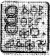

POLİS PLAZA
ROOT parmağını Holly’ye doğru salladı.
“Tebrikler, Yüzbaşı. LEP teknolojisinin bir bölümünü kaybetmeyi başardın.”
Holly azarlanmayı bekliyordu. “Bu yalnızca benim hatam değil, efendim. İnsan hipnotize edilmişti ve bana mekikten ayrılmamamı emretmiştiniz. Olayın kontrolü elimde değildi.”
“On üzerinden on,” diye yorumda, bulundu Foaly. “İyi bir cevap. Neyse ki Güvenlik ağı da olay yerine gönderdiğim öbür şeyler gibi kendi kendini yok edebiliyor.”
“Sen sus, sivil,” diye Foaly’yi tersledi kumandan. Ama LEP memurunun azarında kin yoktu. Rahatlamıştı; diğer hepsi gibi. İnsan tehlikesi denetim altına alınmıştı, üstelik de kimse ölmeden.
Sivil heyetlere ayrılmış bir konferans salonda toplanmışlardı. Genellikle, böylesine önemli toplantılar Harekat Merkezinde yapılırdı ama LEP savunmasının beynini Artemis’e göstermeye henüz hazır değildi.
Root masanın üzerindeki interkom düğmesine bastı. “Bela orada mısın?”
“Evet, efendim.”
“Pekala. Şimdi dinle, alarm durumuna geçmeni istiyorum. Ekipleri derinlerdeki tünellere gönder ve birkaç goblin çetesinin kökünü kurutmaya çalış. Hâlâ yanıtlanmamış bir sürü soru var: öncelikle B’wa Kell’i kim ve ne amaçla örgütlüyor?”
Artemis hiçbir şey söylememesi gerektiğini biliyordu. Pazarlığın onu ilgilendiren bölümü ne kadar çabuk biterse, o kadar kısa sürede Kuzey Kutbunda olabilirdi. Ama bu Paris senaryosunun tamamı ona şüpheli görünüyordu.
“Acaba başka birileri de bu durumun fazlasıyla düzenli olduğunu düşünüyor mu? Hepinizin olmasını istediği şey oldu. Yukarıda, hipnotize edilmiş başka insanların olabileceği gerçeği de cabası.”
Root bir Çamur Çocuğun ona ders vermesinden hoşlanmamıştı. Özelikle de bu Çamur Çocuğun.
“Bak, Fowl, senden istediğimizi yaptın. Paris bağlantısı kopartıldı. Artık bu çavlandan yasadışı bir mal geçirilemeyecek, bundan emin olabilirsin. Hatta, işler durumda olsun ya da olmasın tüm çavlanlardaki güvenlik önlemlerini iki katına çıkardık. Asıl önemli olan, insanlarla ticaret yapan her kimse, onlara Peri Halkından söz etmemiş olması. Tabii ki önemli bir soruşturma açılacak ama bu, içişlerimizin sorunu. Bu yüzden, genç zihnini bu işlerle yorma. Sen büyümene bak.”
Artemis yanıt vermeye - fırsat bulamadan Foaly söze karıştı. “Rusya ile ilgili,” dedi aceleyle, Artemis ile kumandanın arasına girerek. “Bir ipucu buldum.”
“Elektronik postanın izini mi sürdün?” diye sordu Artemis, dikkatini bir anda Foaly’ye çevirerek.
“Aynen,” diye onayladı Foaly, ders verir gibi konuşmaya başlamıştı.
“Hani girişi engellenmişti. İzi sürülemezdi.”
Foaly kıkır kıkır güldü. “Girişi mi engellenmiş? Güldürme beni. Siz Çamur Adamlar ve şu iletişim sistemleriniz. Tanrı aşkına, hâlâ kablo kullanıyorsunuz. Gönderilmiş bir şey varsa, onun izini sürebilirim.”
“Peki öyleyse, izini nereye kadar sürdün?”
“Her bilgisayarın parmak izi kadar kendine özgü bir imzası vardır,” diye konuşmasını sürdürdü Foaly. “Bilgisayar ağlarının da öyle. Elektrik tesisatının yaşına göre, mikro-izler bırakırlar. Her şey molekülerdir ve eğer cigabaytlarca veriyi, küçük bir kabloya yüklersen, kablonun bir bölümü yavaş yavaş erir.”
Kâhya sabırsızlanıyordu. “Dinle, Foaly. Zamanımız çok değerli. Bay Fowl’un hayatta kalıp kalamayacağı henüz belli değil. Bu yüzden, ben bir şeyleri kırıp dökmeye başlamadan önce konuya gir.”
Foaly’nin ilk tepkisi gülmek oldu. İnsan dalga geçiyor olmalıydı. Sonra, Kâhya’nın, Bela Kelp’in Değiştirme ekibine neler yaptığını anımsadı ve doğrudan sadede gelmeye karar verdi.
“Pekala, Çamur Adam. Şaşkınlıktan bayılmamaya çalış.”
Böylece neredeyse hemen hemen sadede geldi. “MPEG dosyasını filtrelerimden geçirdim. İçindeki uranyum tortusu, kuzey Rusya’yı işaret ediyor.”
“İşte bu inanılmaz.”
“Henüz bitirmedim,” dedi Foaly. “İzle ve gör.”
Foaly duvardaki ekrana Kuzey Kutbu Dairesinin uydudan alınmış bir görüntüsünü yansıttı. Tuşlara her basışında işaretli alanın boyutları ufaldı.
“Uranyum, Severmorsk demektir. Ya da elli mil yakınındaki bir yer. Bakır teller eski bir iletişim ağına ait. Yirminci yüzyılın başından kalma, yıllar boyunca eğreti tamir görmüş olmalı. Bu özelliklere tek uyan yer Murmansk. Noktaları birleştirmek işte bu kadar basit.” Artemis sandalyenin ucuna oturdu.
“Bu ağın içinde, tam iki yüz seksen dört bin toprak hattı var.” Foaly gülmek için konuşmasını kesti. “Toprak hatları. Vahşiler sizi.”
Kâhya parmaklarını gürültüyle çatırdattı.
“Ah, demek iki yüz seksen dört bin toprak hattı. MPEG dosyamızla, eşleştirme yapmak için bir program yazdım. İki olası eşleşme var. Birincisi, Adliye Sarayına kayıtlı.”
“Olamaz. Öbürü?”
“Öbür hat, Lenin Prospekt’ten Mikhael Vassikin adına kayıtlı.”
Artemis midesinin bulandığım hissetti. “Peki Mikhael Vassikin hakkında neler biliyoruz?”
Foaly parmaklarını bir konser piyanisti gibi salladı. “Kendi istihbarat arşivimin içinde bir araştırma yaptım. Çamur Adamların sözde istihbarat ofisleriyle ile ilgili kayıtları tutmayı severim. Bu arada seninle ilgili de birkaç bilgi var, Kâhya.”
Hizmetkâr masummuş gibi görünmeye çalışsa da yüz kasları bunu pek başaramadı.
“Mikhael Vassikin, şu an Mafya için çalışan, eski bir KGB ajanı. Görevinin resmi adı holigan. O bir tetikçiydi. Pek üst düzey değil ama sokak süprüntüsü de sayılmaz. Vassikin’in patronu, Britva adında bir Murmansklı. Grubun en önemli gelir kaynağını, Avrupalı işadamlarını kaçırmak oluşturuyor. Son beş yıl içinde, altı Aman ve bir İsveçli kaçırdılar.”
“İçlerinden kaçı canlı olarak ele geçirildi?” diye fısıldayarak sordu Artemis.
Foaly istatistiklerine göz attı. “Hiç biri,” dedi. “Ve iki olayda da arabulucular ortadan kayboldu. Toplam sekiz milyon dolarlık fidye verildi.”
Oturduğu küçük peri sandalyesinde, Kâhya’nın huzuru kaçtı. “Tamam, bu kadar konuşmak yeter. Sanırım, Bay Vassikin’in arkadaşım, Bay Yumruk’la tanışma zamanı geldi.”
Aşırı duygusal davranıyor, diye düşündü Artemis. Ama ben bile duygularımı daha iyi dile getiremezdim.
“Evet, eski dostum. Bence de yeter. Ama senin adının da kayıp arabulucular listesinde yer almasını istemiyorum. Bu adamlar zeki. Bu yüzden, bizim onlardan daha zeki olmamız gerekiyor. Bizler atalarımızın sahip olmadıkları üstünlüklere sahibiz. Kaçıranın kim olduğunu biliyoruz, nerede yaşadığını biliyoruz ve en önemlisi, elimizde peri büyülerimiz var.” Artemis, Yarbay Root a bir bakış attı. “Peri büyülerimiz var, öyle değil mi?”
“En azından sizinle gelecek olan bir periniz var,” diye yanıt verdi yarbay. “Adamlarımdan hiçbirini Rusya’ya gitmek konusunda zorlayamam. Ama yedekleri kullanabilirim.” Kumandan, Holly’ye baktı. “Ne düşünüyorsun?”
“Tabii ki gidiyorum,” dedi Holly. “Ben, elinizdeki en iyi mekik pilotuyum.”
KOBOİ LABORATUARLARI
Koboi Laboratuarlarının bodrum katında bir atış poligonu vardı. Opal onu özel sipariş üzerine yaptırmıştı. Ses geçirmez poligonun içinde, üç boyutlu jiroskoplara takılı bir fırlatma sistemi, vardı. İçine yirmi metre yükseklikten bir fil bile atsanız, yeraltındaki hiçbir sismograf küçük bir titreşimden fazlasını kaydetmezdi.
Bu atış poligonu gerçek harekât başlamadan, B’wa Kell’in Yumuşakburun lazer silahlarıyla biraz eğitim yapabilmeleri için inşa edilmişti. Ama Briar Cudgeon simülatörlerin başında herkesten fazla zaman harcıyordu. Boş zamanlarının her anını, güçlü rakibi, Yarbay Julius Root’la sanal savaşlar yaparak geçiriyormuş gibiydi.
Opal onu değerli Yumuşakburun Redboyuyla üç boyutlu bir ekrana yansıttığı, Root’un eski bir alıştırma filmine ateş ederken bulmuştu. Bu gerçekten çok dokunaklıydı; Opal bu konuda konuşmak bile istemedi.
Cudgeon kulaklarındaki tıpaları çıkarttı. “Evet. Kim öldü?”
Opal ona bir video kaset uzattı. “Bu, az önce casus kameralardan geldi. Carrere her zamanki beceriksizliğini kanıtladı. Herkes sağ kurtuldu ama senin de tahmin ettiğin gibi Root alarm durumuna geçti. Şimdi de yarbay kuzey Rusya’ya, yani Kuzey Kutbu Dairesine kadar insanlara eşlik etmeye karar verdi.”
“Kuzey Rusya’nın neresi olduğunu biliyorum,” diye onu tersledi Cudgeon. Kabarcıklarla dolu başını düşünceli düşünceli sıvazlamak için bir süre durdu. “Bu durumdan yararlanabiliriz. Artık yarbayı ortadan kaldırmak için harika bir fırsatımız var. Julius aradan çıkarsa, LEP başsız bir kokuşmuş solucana döner. Özellikle de yüzeyle iletişimleri kopukken. İletişimleri kesinlikle kopuk, değil mi?”
“Elbette,” diye yanıtladı Opal. “Çavlandaki algılayıcılara telsiz mesajlarına engel olan bir aygıt bağlı. Yüzey vericilerinde oluşacak her türlü parazitin magma alevlerinden kaynaklandığı sanacaklar.”
Harika, ’ dedi Cudgeon, dudaklarında, sevinç olarak tanımlanabilecek bir seğirtiyle. “Şimdi, LEP’in tüm silahlarını etkisiz kılmanı istiyorum. Julius’a hiç üstünlük vermenin gereği yok.”
Koboi Laboratuarları LEP silahları ve taşıma araçlarının performansını arttırdığında, her aletin içine küçük bir nokta lehimlenmişti. Koboi iletişim çanağından, uygun frekansta bir sinyal yayıldığında cıva-gliserin karışımı bu lehim patlayacaktı. B’wa Keli tam donanımlı Yumuşakburun lazerlerle kuşanmışken, LEP in silahları işe yaramayacaktı.
“Olmuş bil,” dedi Opal. “Root’un geri dönmeyeceğinden emin misin? Tüm planımızı mahvedebilir.” Cudgeon, Redboyunu üniformasının bacağına sürüp parlattı. “Endişelenme, tatlım. Julius geri dönmeyecek. Artık nereye gittiğini öğrendiğime göre, ona küçük bir karşılama töreni hazırlayacağım. Eminim ki pullu dostlarımız ona bir iyilik yapmak için can atıyorlardır.”
Asıl komik olan, Briar Cudgeon’ın goblinlerden hoşlanmıyor olmasıydı. İşin aslı, onlardan nefret ediyordu. Sürüngen halleri tüylerini diken diken ediyordu. O gaz yakıcı nefesleri, gözkapaksız gözleri ve ağızlarından sürekli ok gibi fırlayan çatallı dilleri.
Ama onlar Cudgeon’a gereksinim duyduğu bir şeyi sağlıyorlardı: kas gücünü.
B’wa üçlüsü yüzyıllardır Haven’in sınırlarında gizlice dolaşıp çalamadıklarını gasp etmiş ve polis koruması olmayan sokaklarda yürümeye cesaret eden kadar aptal turistleri, soyup soğana çevirmişlerdi. Ama toplumsal açıdan gerçek bir tehlike unsuru oluşturmuyorlardı.
Aşırıya kaçtıkları zamanlarda Yarbay Root suçluları gizlendikleri yerden çıkartmak için tünellere bir ekip gönderirdi.
Bir akşam, Briar Cudgeon kılık değiştirip adı çıkmış bir B’wa Keli barı olan, İkinci Ten’e gelmiş ve içi altın külçeleriyle dolu evrak çantasını barın üzerine fırlatarak, “Üçlüyle görüşmek istiyorum,” demişti.
Kulübün fedaileri Cudgeon’ın üstünü arayıp gözlerini bağlamışlardı. Yüzündeki yapışkan bandı çıkarttıklarında duvarı yosun kaplı, nemli bir depodaydı. Karşısındaki masada yaşlıca üç goblin oturmuştu. Cudgeon onları fotoğraflarından tanımıştı. Scalene, Sputa ve Phlebum. Üçlünün deneyimli kafa takımı.
Armağan edilen altın ve onları daha da fazlasının beklediği sözü, goblinlerin meraklarını uyandırmaya yetmişti. Cudgeon ilk konuşmasını önceden dikkatle planlamıştı.
“Sayın Generaller, benimle görüşmeyi kabul etmiş olmanız beni onurlandırdı.”
Goblinlerin yaşlı, kırışmış göğüsleri gururla kabardı. Generaller mi?'
Cudgeon’ın bundan sonraki konuşmaları da bir o kadar hoş ve aldatıcıydı. B’wa Kell’in örgütlenmesine “yardımcı” olabilir, verimliliklerini arttırabilir ve en önemlisi onları silahlandırabilirdi. Sonra zamanı geldiğinde ayaklanıp Konsey’i ve onların uşakları olan, LEP’i devireceklerdi. Cudgeon, Genel İdareci olduğunda ilk iş olarak Howler’s Tepesinde yatan tüm goblin mahkûmları serbest bırakacağına söz verdi. Konuşmasını ufak tefek hipnotizma numaralarıyla süslemenin zararı yoktu.
Bu goblinlerin asla reddedemeyecekleri bir teklifti. Altın, silahlar, kardeşlerinin özgürlüğü ve de nefret ettikleri LEP’i ezme fırsatı. Cudgeon’ın kendilerine de LEP’e ihanet ettiği kadar kolayca ihanet edebileceği B’wa Kell’in hiç aklına gelmemişti. Kokuşmuş solucanlar kadar aptal ve onlardan iki kat daha dar görüşlüydüler.
Cudgeon General Scalene’le Koboi Laboratuarlarının gizli bir odasında buluştu. Luc’un hiçbir düşmanını ortadan kaldıramamasına çok öfkelenmişti. Ama her zaman bir B Planı vardı... B’wa Keli her zaman için birilerini öldürmeye can atardı. Kim olduğu önemli değildi.
Goblin heyecan içindeydi. Kana susamıştı. Tıpkı bozuk bir soba gibi mavi alevler püskürüyordu. “Savaşmaya ne zaman başlıyoruz, Cudgeon? Bize zamanını söyle.” Elf mesafeli davrandı. Bu sersem yaratıkların artık gerekli olmayacakları günün hayalini kurdu.
“Yakında, General Scalene. Çok yakında. Ama önce yardımınıza ihtiyacım olacak. Yarbay Root ile ilgili bir konuda.”
Goblin gözlerini kıstı. “Root mu? Hani şu herkesin nefret ettiği. Onu öldürebilir miyiz? Kafatasını patlatıp beynini kızartabilir miyiz?”
Cudgeon bağışlayıcı bir ifadeyle gülümsedi. “Elbette, General. Tüm bunları yapabilirsiniz. Root öldükten sona şehir kolaylıkla fethedilecektir.”
Goblin artık yerinde duramıyor, heyecan içinde sallanıyordu. “Nerede o? Root nerede?”
“Bilmiyorum,” diye itiraf etti Cudgeon. “Ama altı saat sonra nerede olacağını biliyorum.”
“Nerede? Söyle bana, elf!”
Cudgeon koca bir kutuyu güçlükle kaldırıp masanın üzerine koydu. İçinde dört çift Koboi DoubleDex vardı. “93. Çavlanda. Alnı bunları ve en iyi vurucu ekibinizi oraya gönderin. Onlara sıkıca giyinmelerini söyleyin.”
E93 ÇAVLANI
Julius Root her zaman birinci sınıf yolculuk yapardı. Şu anda, Atlantis büyükelçisinin mekiğine el koymuştu. Bu tamamı deri ve altından yapılma bir mekikti. Bir cücenin poposundan bile yumuşak koltukları ve en şiddetli sarsıntılara bile dayanabilen tamponları vardı. Atlantis büyükelçisinin, mekiğin anahtarını ona çok büyük bir zevkle verdiği söylenemezdi. Ama parmakları kalçasının üzerindeki üç namlulu silahın üzerinde trampet çalarken, kumandana karşı gelmek zordu. Yani anlayacağınız, insanlar ve onlara eşlik eden iki elf E93’ü oldukça rahat şartlarda tırmanıyorlardı.
Artemis kendine soğutucudan su doldurdu. “Suyun tadı farklı,” diye belirtti. “Kötü değil ama farklı.” “Aradığın sözcük, temiz,” dedi Holly. “Onu Çamur Adamlardan arındırmak için kaç filtreden geçirdiğimize inanamazsın.”
“Tartışma yok, Yüzbaşı Short” diye uyardı Root. “Artık aynı cephede savaşıyoruz. Sorunsuz bir görev olmasını istiyorum. Korunma olmaksızın beş dakikadan fazla hayatta kalamayız.”
Holly başının üzerindeki dolabı gürültüyle açtı. “Fowl, öne ve ortaya.”
Artemis dudaklarında şaşkın bir gülümsemeyle emre uydu.
Holly dolabın içinden küp şeklinde birkaç paket çıkarttı. “Hangi bedensin, altı falan mı?”
Artemis omuz silkti. Peri Halkının beden ölçüleriyle ilgili pek bir şey bilmiyordu. “Ne? Artemis Fowl bunu bilmiyor mu? Peri Halkı konusunda dünyanın en uzman kişisi olduğunu sanıyordum. Geçen yıl, Kitabı çalan sen değil miydin, yoksa?”
Artemis paketi açtı. Bu aşırı-hafif, kauçuk polimerden yapılmış bir giysiydi.
“Radyasyona karşı etkili,” diye açıkladı Holly. “Elli yıl sonra hâlâ yaşarsan eğer, hücrelerin bana teşekkür edecek.”
Artemis tulumu giysilerinin üzerinden geçirdi. Tulum üzerine ikinci bir ten gibi yapıştı. “Zekice tasarlanmış bir malzeme.”
“Bellekli lasteks. Mantıklı ölçüler içinde kendini şekle göre uyarlıyor. Giyildikten sonra, geri dönüştürülebiliyor.”
Kâhya şıngırdayarak döndü. Üzerinde öylesine çok sayıda peri silahı taşıyordu ki Foaly ona bir Aykemeri vermeye karar vermişti. Kemer üzerindekilerin etkin ağırlığı
m Dünya standartlarının beşte birine indirmeye yarıyordu.
“Peki ya ben?” diye sordu Kâhya, başıyla radyasyon giysisini işaret ederek.
Holly kaşlarını çattı. “Elimizde, o kadar büyük bir tulum yok. Lasteksin de bir esneme sınırı var.”
“Boş ver. Daha önce de Rusya’ya gittim. Radyasyon beni öldürmeyi başaramadı.”
“Henüz başaramadı. Ona biraz zaman tanı.”
Kâhya omuz silkti. “Başka bir şansım var mı?”
Holly gülümsedi. Gülüşünde muzur bir ifade gizliydi. “Ah, ben başka şansın yok demedim ki.”
Holly dolaba uzanıp içinden pompalı bir sprey kutusu çıkarttı. Ve nedense, bu küçük teneke kutu Kâhya’yı füzelerle dolu bir yeraltı sığınağından daha fazla korkuttu.
“Şimdi kıpırdama,” dedi Holly, gramofona benzer bir ağızlığı korumaya doğrultarak. “Bu evsiz bir cüceden bile daha kötü kokabilir ama en azından cildin karanlıkta parlamayacaktır. ”